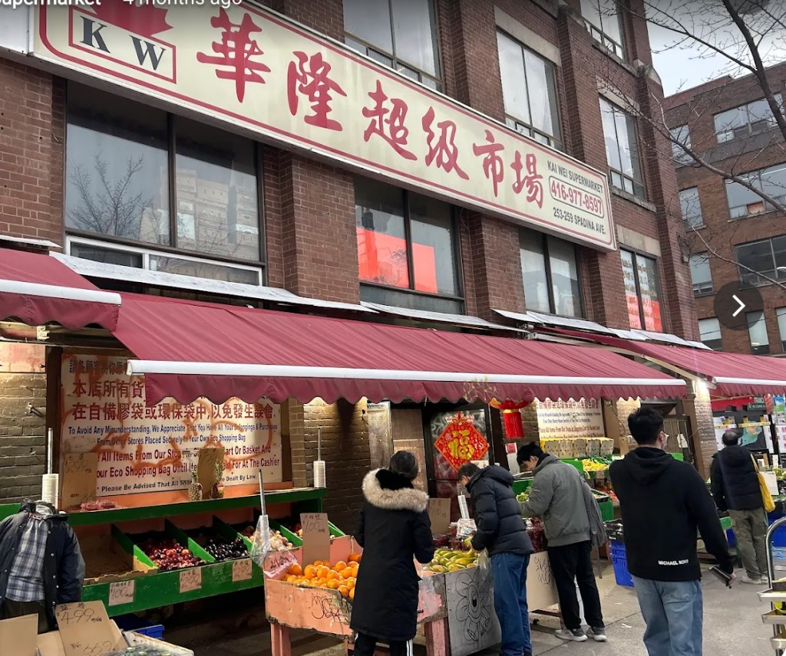
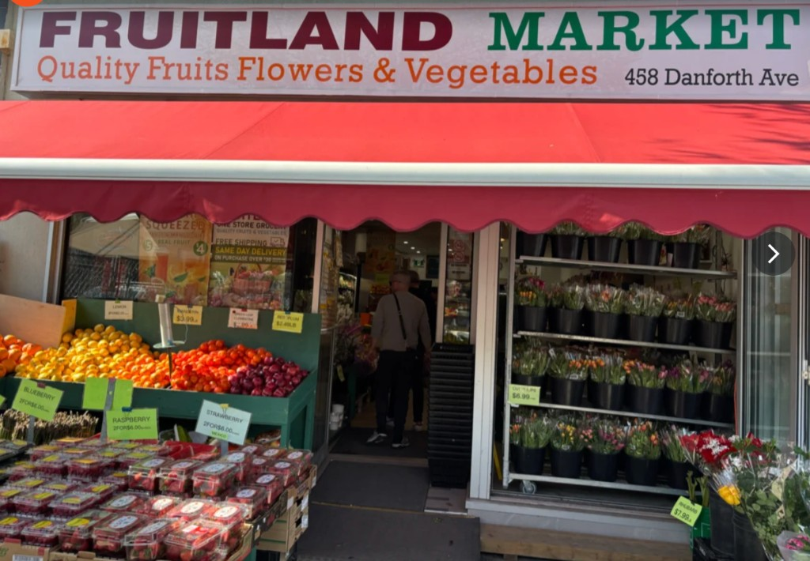
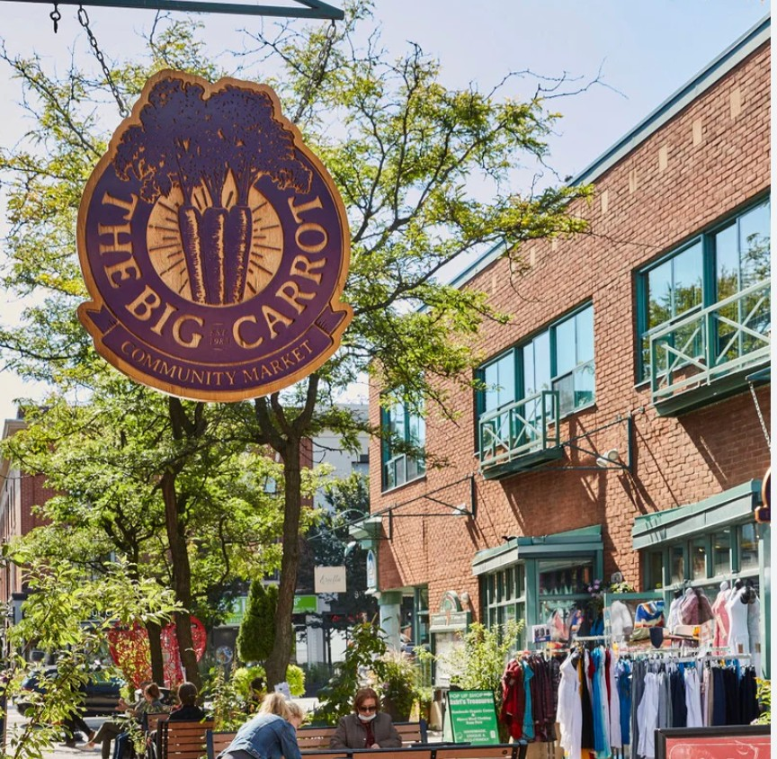

Where I Actually Shop: 3 Toronto Markets for Cheap Veggies & Great Food
Skip the big-box chains. These are the independent markets that bring the joy back into food shopping, and keep your money in the neighbourhood.
Let's be real for a second: grocery shopping at big-box chain stores has lost almost all of its appeal. Between endless self-checkout screens, rising receipts, and uninspired produce aisles, filling up your fridge can feel like a complete chore.
If you skip the giant corporate supermarkets, Toronto is actually filled with amazing independent grocery markets that bring the joy back into food shopping. Visiting small local markets means getting better produce, finding unique ingredients, and keeping your money inside the neighborhood.
Whether you're trying to stretch your budget on dirt-cheap fresh vegetables or hunting down high-quality organic staples, here are three local grocery markets I genuinely love visiting across Toronto.
Kai Wei Supermarket
Chinatown / Kensington Edge · Spadina Ave

The crowded outdoor produce stands at Kai Wei, overflowing with fresh vegetables along Spadina.
If your main goal is getting fresh vegetables for the absolute cheapest prices in the city, Kai Wei Supermarket is an absolute lifesaver. Positioned right where Chinatown meets the edge of Kensington Market, this place is fast-paced, vibrant, and packed to the brim with deals that make chain supermarket prices look ridiculous.
The outdoor tables out front are always overflowing with fresh produce, herbs, and greens. It is easily the best spot in the area to stock up without blowing your wallet:
- Unbeatable leafy greens: Huge bags of bok choy, gai lan, napa cabbage, spinach, and green onions for a fraction of what mainstream grocery stores charge.
- Herbs and aromatics: Cilantro, fresh ginger, garlic, chili peppers, and lemongrass sold in generous portions for dirt-cheap prices right out front.
- Huge mushroom variety: Fresh oyster, king oyster, shiitake, and enoki mushrooms in bulk or value packs, instead of overpaying for tiny plastic containers.
- Asian pantry staples: Inside, it's a paradise for hot sauces, noodles, fresh tofu, and dumplings.
Fruitland
Greektown on Danforth · 458 Danforth Ave

Vibrant citrus crates and flower buckets spilling onto the sidewalk display on the Danforth.
If you're walking through Greektown along the Danforth, it's almost impossible to miss Fruitland. With crates of colorful fruit and vegetables spilling out onto the sidewalk display, this neighborhood market is a local icon.
Fruitland is all about old-school neighborhood charm and unbelievable produce deals. Whether you are grabbing ripe berries, fresh herbs, or seasonal veggies for weeknight dinners, the quality is top-tier and the prices beat the big chains down the street every single time.
The staff is friendly, the turnover is high (which means everything stays fresh), and it gives you that warm, local market experience where shopping actually feels like a nice neighborhood routine.
The Big Carrot Community Market
Danforth

The iconic hanging sign that marks the entrance to The Big Carrot on the Danforth.
When I'm looking for high-quality organic groceries, eco-friendly home goods, or wholesome specialty snacks, The Big Carrot on the Danforth is my favorite spot to wander around. Operating as a worker-owned co-op since the 1980s, it's a Danforth institution for a reason.
While it operates as a specialized natural food market rather than a discount spot, it's worth every penny for what it offers. Their produce section is 100% organic, their bulk food section is amazing for zero-waste pantry refills, and their hot bar and juice counter make it easy to grab lunch while you shop.
Shopping here just feels good knowing you are supporting a local business that prioritizes sustainability, fair trade, and local Ontario farmers.